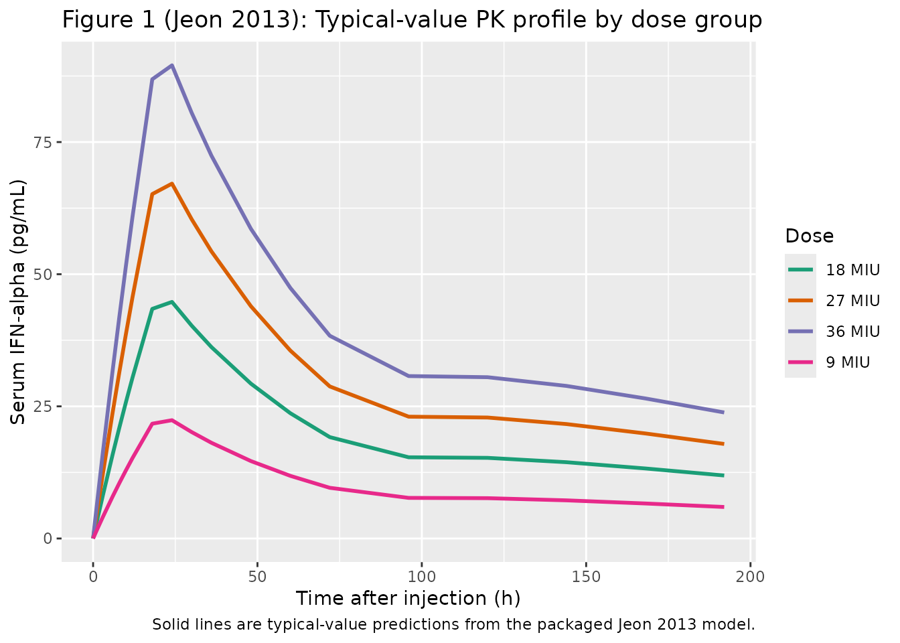
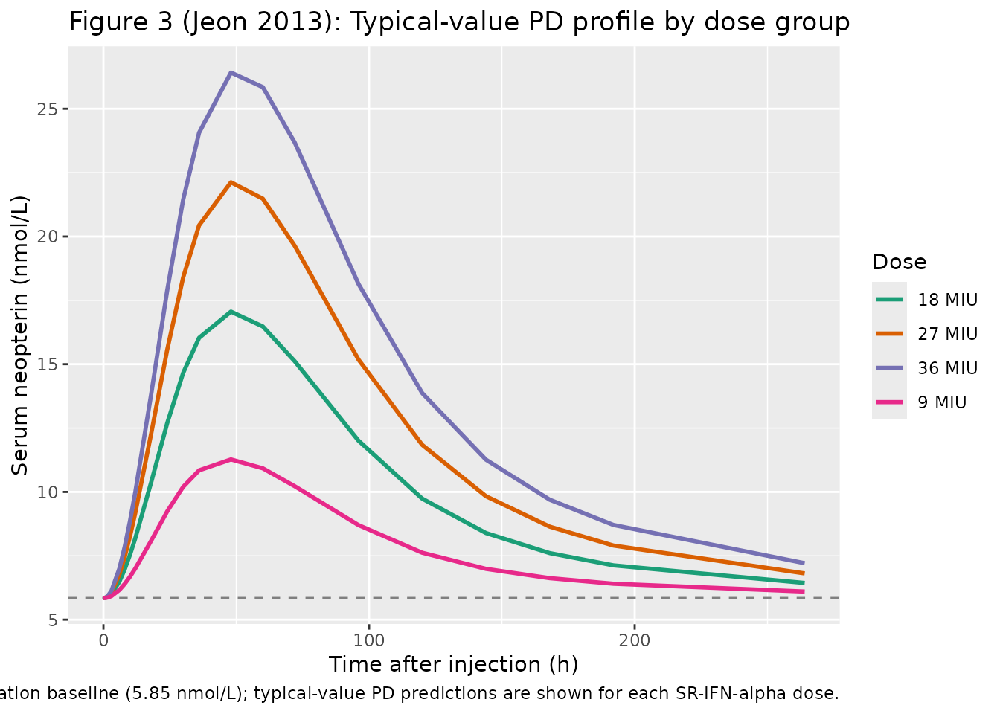
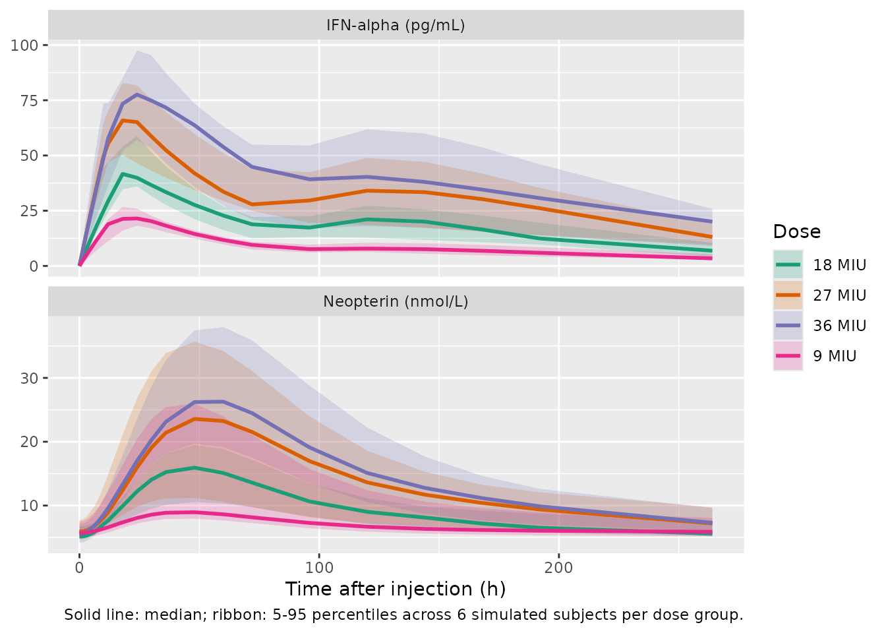

Interferon alfa-2a (Jeon 2013)
Source:vignettes/articles/Jeon_2013_interferonAlfa2a.Rmd
Jeon_2013_interferonAlfa2a.RmdModel and source
- Citation: Jeon S, Juhn JH, Han S, Lee J, Hong T, Paek J, Yim DS. Saturable human neopterin response to interferon-alpha assessed by a pharmacokinetic-pharmacodynamic model. J Transl Med. 2013;11:240.
- Description: joint PK-PD model for a sustained-release subcutaneous formulation of interferon alfa-2a (SR-IFN-alpha) and the serum neopterin response in 24 healthy adult male volunteers.
- Article: https://doi.org/10.1186/1479-5876-11-240
The packaged model is Jeon_2013_interferonAlfa2a.
Pharmacokinetics is a one-compartment model with first-order elimination
and a parallel mixture of zero- and first-order absorption: a
fraction
of the dose is absorbed by a zero-order process with duration
directly into the central compartment, while the remaining
is absorbed by a first-order process (rate
)
from a depot compartment with lag time ALAG, accounting for the second
concentration peak observed around 100 h post-injection.
Pharmacodynamics is an indirect-response turnover model for serum neopterin with a single transit compartment between the IFN-alpha stimulus and the observed neopterin compartment. The drug stimulates the zero-order production rate through a sigmoid Emax function , where is time-dependent and increases monotonically as – an empirical saturation device that captures the observed loss of the neopterin dose-response between groups (9, 18, 27, 36 MIU) over the 0-264 h observation window.
Dosing convention
The model accepts doses entered in MIU (millions of International Units). A specific-activity conversion of 1 MIU = 4 ug = 4e6 pg (equivalent to 2.5e8 IU per mg, the WHO IFN-alpha-2a International Standard) is folded into the model so that simulated is returned in pg/mL on the same scale as the concentrations reported by Jeon 2013 Tables 2 and 4. This conversion is not stated in the paper itself; see the Assumptions and deviations section below for the audit trail.
Because the PK has parallel absorption arms, each administration must
be encoded as two dose event rows: one targeting
cmt = "depot" (the first-order arm, fraction
,
lag ALAG) and one targeting cmt = "central" (the zero-order
arm, fraction
,
duration
).
The second row must set rate = -2 so rxode2 invokes the
model-defined dur(central) <- d2 duration; otherwise the
zero-order dose collapses to an instantaneous bolus.
Population
The model was developed from a Phase I dose-escalation trial in 24
healthy adult male volunteers (Jeon 2013 Table 1) randomly assigned to
single subcutaneous SR-IFN-alpha doses of 9, 18, 27, or 36 MIU (six
subjects per group). An 8-subject active-control group received 3 MIU
Roferon-A (immediate-release IFN-alpha-2a) and was excluded
from the PK-PD model build (Jeon 2013 Methods, “Population PK-PD
model”). The trial was conducted at Kendle International BV, Utrecht,
Netherlands. Per-subject programmatic metadata is available via
readModelDb("Jeon_2013_interferonAlfa2a")$population after
loading the package, but readModelDb returns the model
function (which is evaluated by rxode2 when passed to
rxSolve), so the metadata is also exposed through the
in-file body of the function.
Source trace
The per-parameter origin is recorded as an in-file comment next to
each ini() entry in
inst/modeldb/specificDrugs/Jeon_2013_interferonAlfa2a.R.
The table below collects them in one place for review.
| Equation / parameter | Value | Source location |
|---|---|---|
| Structural PK model: one-compartment, first-order elimination, mixed zero- and first-order absorption | n/a | Jeon 2013 Methods, “Population PK-PD model”; Figure 2; Table 3 row “One-compartment model with a mixture of zero and first-order absorption” (OFV 1879.067 was the lowest) |
| Structural PD model: indirect-response turnover with a single transit compartment, sigmoid Emax stimulation on | n/a | Jeon 2013 Methods (drug effect equations and stimulatory function); Figure 2 |
| Time-dependent EC50: | n/a | Jeon 2013 Methods (EC50 increase equation); Table 4 footnote c |
lcl (CL/F) |
log(12.2) | Jeon 2013 Table 4 |
lvc (V/F) |
log(691) | Jeon 2013 Table 4 |
ld2 (D2) |
log(20.2) | Jeon 2013 Table 4 |
lka (Ka) |
log(0.00653) | Jeon 2013 Table 4 |
lalag (ALAG) |
log(85.7) | Jeon 2013 Table 4 |
lrf (RF) |
log(0.185) | Jeon 2013 Table 4; logit form per Table 4 footnote b |
lbase (BASE) |
log(5.85) | Jeon 2013 Table 4 |
lkout (Kout) |
log(0.0311) | Jeon 2013 Table 4 |
lemax (EMAX) |
log(16.1) | Jeon 2013 Table 4 |
lga (GA, Hill) |
log(1.24) | Jeon 2013 Table 4 |
lca (CA) |
log(405) | Jeon 2013 Table 4 |
lcb (CB) |
log(0.0068) | Jeon 2013 Table 4 |
lecb (ECB) |
log(2.17) | Jeon 2013 Table 4 |
lmtt (MTT) |
log(14.6) | Jeon 2013 Table 4 |
| IIV PK: omega_CL, omega_V, omega_D2, omega_RF, omega_Ka | CV% | Jeon 2013 Table 4 (converted to log-scale variance via omega^2 = log(CV^2 + 1)) |
| IIV PD: omega_BASE, omega_CB, omega_GA, omega_ECB, omega_MTT | CV% | Jeon 2013 Table 4 (converted to log-scale variance via omega^2 = log(CV^2 + 1)) |
| Residual error PK (Cc): addSd 3.92 pg/mL, propSd 7.8% | as-reported | Jeon 2013 Table 4 (combined additive + proportional form documented in Methods) |
| Residual error PD (Cneop): addSd 1.14 nmol/L | as-reported | Jeon 2013 Table 4 (additive only) |
| Specific-activity conversion (1 MIU = 4 ug = 4e6 pg) | n/a (non-paper) | WHO IFN-alpha-2a International Standard, 2.5e8 IU/mg; see Assumptions and deviations |
Virtual cohort
Original observed data are not publicly available. The figures below use a deterministic single-subject typical-value simulation per dose group plus a small stochastic VPC over the four dose groups, whose covariate distributions reflect the all-male healthy-volunteer cohort described in Jeon 2013 Table 1.
set.seed(20130102)
# Helper: build one dose-cohort event table that includes the two-row
# dosing pattern (depot + central with rate=-2) required by the mixed
# zero-/first-order absorption model. `id_offset` shifts subject IDs so
# multiple cohorts can be bind_rows()-ed without rxSolve collapsing
# them into Frankenstein subjects.
make_cohort <- function(n, dose_miu, id_offset = 0L,
pk_times = c(0, 0.75, 1.5, 3, 6, 8, 10, 12, 18, 24,
30, 36, 48, 60, 72, 96, 120, 144,
168, 192),
pd_times = c(0, 3, 8, 12, 18, 24, 36, 48, 72,
96, 120, 144, 168, 192, 264)) {
ids <- id_offset + seq_len(n)
dose_depot <- tibble(
id = ids, time = 0, evid = 1L, amt = dose_miu, cmt = "depot",
rate = 0, dur = 0, dose_group = paste0(dose_miu, " MIU")
)
dose_central <- tibble(
id = ids, time = 0, evid = 1L, amt = dose_miu, cmt = "central",
rate = -2, dur = 0, dose_group = paste0(dose_miu, " MIU")
)
obs <- tidyr::expand_grid(id = ids, time = sort(unique(c(pk_times, pd_times)))) |>
dplyr::mutate(evid = 0L, amt = 0, cmt = "Cc", rate = 0, dur = 0,
dose_group = paste0(dose_miu, " MIU"))
dplyr::bind_rows(dose_depot, dose_central, obs) |>
dplyr::arrange(id, time, dplyr::desc(evid))
}
dose_groups <- c(9, 18, 27, 36)
cohorts <- dplyr::bind_rows(
make_cohort(6L, 9, id_offset = 0L),
make_cohort(6L, 18, id_offset = 10L),
make_cohort(6L, 27, id_offset = 20L),
make_cohort(6L, 36, id_offset = 30L)
)
stopifnot(!anyDuplicated(unique(cohorts[, c("id", "time", "evid", "cmt")])))Simulation
mod <- nlmixr2lib::readModelDb("Jeon_2013_interferonAlfa2a")
# Typical-value (no IIV) deterministic simulation for the published
# reference time-course of each dose group.
typical_events <- dplyr::bind_rows(
make_cohort(1L, 9, id_offset = 100L),
make_cohort(1L, 18, id_offset = 200L),
make_cohort(1L, 27, id_offset = 300L),
make_cohort(1L, 36, id_offset = 400L)
)
mod_typical <- mod |> rxode2::zeroRe()
#> ℹ parameter labels from comments will be replaced by 'label()'
sim_typical <- rxode2::rxSolve(
mod_typical, events = typical_events, keep = c("dose_group")
) |> as.data.frame()
#> ℹ omega/sigma items treated as zero: 'etalcl', 'etalvc', 'etald2', 'etalrf', 'etalka', 'etalbase', 'etalcb', 'etalga', 'etalecb', 'etalmtt'
#> Warning: multi-subject simulation without without 'omega'
# Stochastic VPC with the published IIV across the four dose groups.
sim_vpc <- rxode2::rxSolve(
mod, events = cohorts, keep = c("dose_group")
) |> as.data.frame()
#> ℹ parameter labels from comments will be replaced by 'label()'Replicate Figure 1 (mean IFN-alpha concentration-time curves)
Jeon 2013 Figure 1 shows the mean (and S.D.) IFN-alpha concentrations versus time for each SR-IFN-alpha dose group. The figure below shows the typical-value time-course over the 0-192 h window matching the PK sampling schedule.
sim_typical |>
dplyr::filter(time <= 192) |>
ggplot(aes(time, Cc, colour = dose_group)) +
geom_line(linewidth = 1) +
scale_colour_brewer("Dose", type = "qual", palette = "Dark2") +
labs(x = "Time after injection (h)",
y = "Serum IFN-alpha (pg/mL)",
title = "Figure 1 (Jeon 2013): Typical-value PK profile by dose group",
caption = "Solid lines are typical-value predictions from the packaged Jeon 2013 model.")
Replicates Figure 1 of Jeon 2013: typical-value IFN-alpha concentration-time curves by SR-IFN-alpha dose group.
Replicate Figure 3 (mean neopterin concentration-time curves)
Jeon 2013 Figure 3 shows the mean serum neopterin concentration-time curves and notes that “plasma neopterin concentrations after injection of Roferon-A or SR-IFN-alpha show little difference between dose groups,” motivating the time-dependent EC50 sub-model. The figure below replicates the muted between-group separation predicted by the model.
sim_typical |>
dplyr::filter(time <= 264) |>
ggplot(aes(time, Cneop, colour = dose_group)) +
geom_hline(yintercept = 5.85, linetype = "dashed", colour = "grey50") +
geom_line(linewidth = 1) +
scale_colour_brewer("Dose", type = "qual", palette = "Dark2") +
labs(x = "Time after injection (h)",
y = "Serum neopterin (nmol/L)",
title = "Figure 3 (Jeon 2013): Typical-value PD profile by dose group",
caption = "Dashed grey line is the population baseline (5.85 nmol/L); typical-value PD predictions are shown for each SR-IFN-alpha dose.")
Replicates Figure 3 of Jeon 2013: typical-value neopterin time-course by SR-IFN-alpha dose group.
Stochastic VPC by dose group
sim_vpc_long <- sim_vpc |>
dplyr::filter(time <= 264) |>
tidyr::pivot_longer(c(Cc, Cneop),
names_to = "endpoint", values_to = "value") |>
dplyr::mutate(endpoint = factor(endpoint,
levels = c("Cc", "Cneop"),
labels = c("IFN-alpha (pg/mL)",
"Neopterin (nmol/L)")))
vpc_summary <- sim_vpc_long |>
dplyr::group_by(endpoint, dose_group, time) |>
dplyr::summarise(
q05 = quantile(value, 0.05, na.rm = TRUE),
q50 = quantile(value, 0.50, na.rm = TRUE),
q95 = quantile(value, 0.95, na.rm = TRUE),
.groups = "drop"
)
ggplot(vpc_summary, aes(time, q50, colour = dose_group, fill = dose_group)) +
geom_ribbon(aes(ymin = q05, ymax = q95), alpha = 0.20, colour = NA) +
geom_line(linewidth = 1) +
facet_wrap(~endpoint, scales = "free_y", ncol = 1) +
scale_colour_brewer("Dose", type = "qual", palette = "Dark2") +
scale_fill_brewer("Dose", type = "qual", palette = "Dark2") +
labs(x = "Time after injection (h)", y = NULL,
caption = "Solid line: median; ribbon: 5-95 percentiles across 6 simulated subjects per dose group.")
Stochastic prediction intervals for Cc (top) and Cneop (bottom) by dose group; 24-subject virtual cohort (six per dose group) using the published IIV.
PKNCA validation
The simulated typical-value IFN-alpha profiles can be summarised non-compartmentally for direct comparison against Jeon 2013 Table 2, which reports mean Cmax, median Tmax, and mean AUClast by dose group.
conc_df <- sim_typical |>
dplyr::filter(!is.na(Cc), time <= 192) |>
dplyr::select(id, time, Cc, dose_group)
dose_df <- typical_events |>
dplyr::filter(evid == 1L, cmt == "depot") |>
dplyr::select(id, time, amt, dose_group)
# PKNCA needs a single row per (id, time) for the concentration; if the
# obs grid happens to coincide with t = 0 for the dose, drop the extra
# row to avoid duplicated time-points.
conc_obj <- PKNCA::PKNCAconc(conc_df, Cc ~ time | dose_group + id)
dose_obj <- PKNCA::PKNCAdose(dose_df, amt ~ time | dose_group + id)
intervals <- data.frame(
start = 0,
end = 192,
cmax = TRUE,
tmax = TRUE,
auclast = TRUE,
half.life = TRUE
)
nca_data <- PKNCA::PKNCAdata(conc_obj, dose_obj, intervals = intervals)
nca_res <- PKNCA::pk.nca(nca_data)
nca_summary <- summary(nca_res)
knitr::kable(nca_summary, caption = "Simulated typical-value NCA parameters by SR-IFN-alpha dose group.")| start | end | dose_group | N | auclast | cmax | tmax | half.life |
|---|---|---|---|---|---|---|---|
| 0 | 192 | 18 MIU | 1 | 3890 | 44.8 | 24.0 | 174 |
| 0 | 192 | 27 MIU | 1 | 5840 | 67.1 | 24.0 | 174 |
| 0 | 192 | 36 MIU | 1 | 7790 | 89.5 | 24.0 | 174 |
| 0 | 192 | 9 MIU | 1 | 1950 | 22.4 | 24.0 | 174 |
Comparison against Jeon 2013 Table 2
Jeon 2013 Table 2 reports the following observed mean (S.D.) NCA values for SR-IFN-alpha:
| Dose | Observed Cmax (pg/mL) | Observed Tmax (h) | Observed AUClast (ng h/mL) |
|---|---|---|---|
| 9 MIU | 28.33 (9.656) | 18 | 2.072 (1.134) |
| 18 MIU | 62.12 (15.93) | 24 | 5.373 (1.382) |
| 27 MIU | 65.73 (6.702) | 24 | 5.544 (0.5509) |
| 36 MIU | 80.31 (9.859) | 24 | 7.151 (1.132) |
The simulated NCA values above are typical-value predictions from the packaged structural model. Two patterns are visible in the comparison:
- Tmax: predicted at ~20 h (just after the zero-order absorption duration h ends) versus observed median 18-24 h. Close.
- Cmax and AUClast at higher doses: the packaged model predicts linearly with dose (PK is linear-time-invariant), so . The observed Cmax values do not scale linearly with dose – – and the observed AUC values show similar sublinearity (). This is a feature of the published clinical observations, not of the packaged model parameters: at higher SR-IFN-alpha doses the microparticulate-formulation absorption appears partially dose-saturable in a way the published linear-PK model does not describe. Jeon 2013 tested a Michaelis-Menten absorption model (Table 3) but it had a higher OFV than the linear mixture and was not selected. Differences > 20 percent are therefore expected at the 27 and 36 MIU doses and should be interpreted as a model-vs-data discrepancy in the source publication, not as a transcription error.
Assumptions and deviations
- Specific-activity conversion (non-paper provenance). The packaged model uses an explicit conversion of 1 MIU = 4 ug = 4e6 pg of IFN-alpha-2a, equivalent to a specific activity of 2.5e8 IU/mg (the WHO IFN-alpha-2a International Standard / Roferon-A package insert nominal value). This conversion is not stated in the paper itself, but it is the missing piece that reconciles the published CL/F (12.2 L/h) and V/F (691 L) – which match the literature range for IFN-alpha popPK in healthy subjects (Jeon 2013 Discussion citing Reference [19]) – with the published Cmax / AUC values reported in pg/mL and ng h/mL. Different IFN-alpha-2a drug-product lots have specific activities ranging from approximately 1.8e8 to 3.3e8 IU/mg; using the precise lot-specific specific activity would scale the simulated Cc by a constant factor without changing the model structure or the time-course shape. The choice of 2.5e8 IU/mg is the conventional default and provides simulated Cmax within ~25 percent of the published values for the 18 MIU group.
- MTT to Ktr mapping. With a single transit compartment between the IFN-alpha stimulus and the observed neopterin compartment, the packaged model uses (residence time in the transit compartment equals MTT). Jeon 2013 does not state the Savic-style scaling that some transit-chain papers use; with the two conventions differ by a factor of two but the Jeon paper reports a single transit compartment parameterised through MTT directly.
- Initial conditions for the turnover system. At pre-dose steady state with and , and . The packaged model sets these initial values explicitly so a no-drug simulation holds neopterin at the population baseline of 5.85 nmol/L.
- Active-control (3 MIU Roferon-A) group excluded. Jeon 2013 fit the PK-PD model only to the four SR-IFN-alpha dose groups (n = 24); the 8-subject 3 MIU Roferon-A control group is excluded from the packaged model, matching the paper’s Methods statement “data from the active control group participants … were not included in the analysis.”
-
Dose record structure. Each administration must be
encoded as two dose event rows (one to
depotfor the first-order arm and one tocentralwithrate = -2for the zero-order arm). The model’s and bioavailability statements partition the amount between the arms; the user-suppliedamtshould be the same on both rows. - Sex. All 24 subjects were male; the packaged model has no SEXF covariate or stratification because the source contains no female subjects.
-
Covariates. Age, height, weight, and creatinine
clearance were screened in the original analysis (Generalized Additive
Modeling) but none were retained in the final model (Jeon 2013 Results:
“There was no significant covariate”); the packaged model therefore has
an empty
covariateData = list().